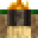

穴窯
穴窯はアイテムを加熱するTFC序盤の方法です。たとえば、粘土を焼成してセラミックにするために使用できます。穴窯は、約8時間(ゲーム内)かけて内容物を1400°C、つまり白みがかった黄色まで加熱します。
穴窯を作成するには、次のものが必要です:
- 焼成するアイテム最大4つ
- 藁8個
- 丸太8本
- 火起こし器や松明など、火をつけることができるアイテム。
メモ: 松明は、穴窯に松明を投げて数秒待つと着火できます。
穴窯を作成するには:
1. Vをを押して 1x1 の穴に最大4つのアイテムを置きます。
2. アイテムが覆われるまで、穴窯に藁を8つ詰めます。
3. 丸太を8本置きます。
4. 穴窯の上部に火をつけます!
穴窯は8時間(ゲーム内)燃えます。ゆっくりと加熱し、焼き終わると内側には仕上がったアイテムが残ります。


穴窯の作り方